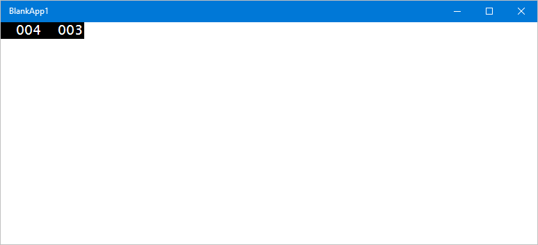
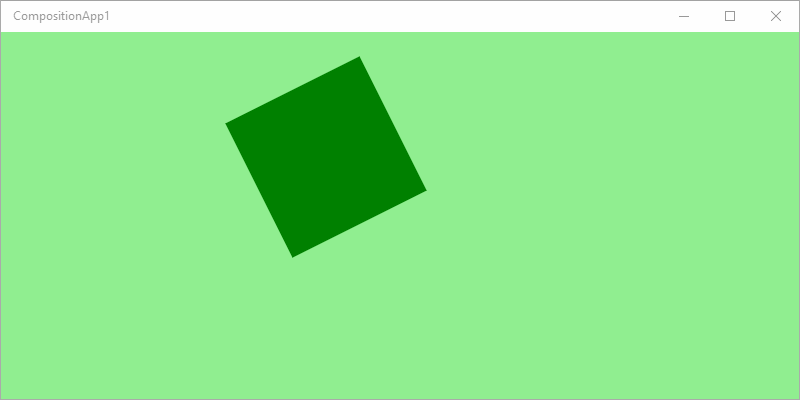
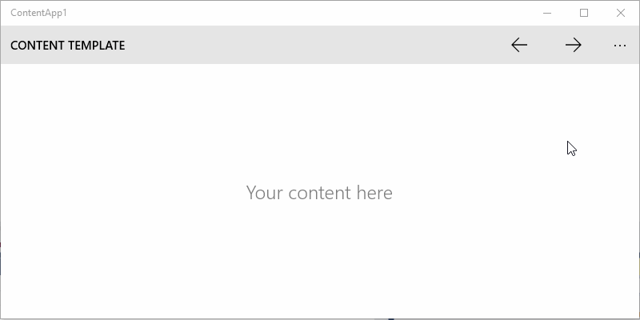
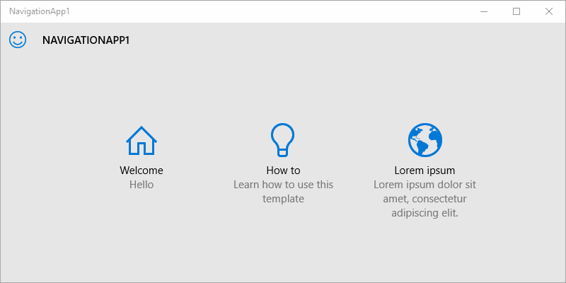
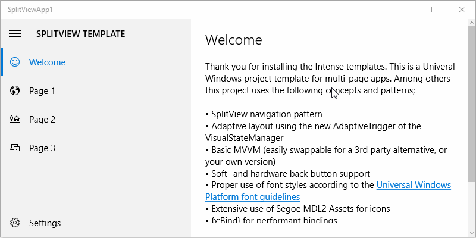

Intense
Controls, templates, and tools for building Universal Windows Platform apps on Windows 10. The Intense toolkit consists of two parts; a library of controls and helpers distributed as NuGet package, and a Visual Studio extension with project templates for creating new UWP apps.
Intense Templates
Adds new project and item templates to Visual Studio 2015 for creating Universal Windows apps. The templates are available in both C# and Visual Basic flavors. The following templates are included;
Blank App
A basic XAML project with a single XAML page. Similar to the standard Blank App template, included in the Windows 10 SDK, but without the Application Insights telemetry stuff.

Composition App
A framework-less project for creating apps using the visual layer and Windows.UI.Composition APIs.

Composition XAML App
A project for getting started with both XAML and Windows.UI.Composition APIs.

Content App
A content oriented app with a command bar and pinnable pane. Comparable to the Microsoft Edge user interface.

Navigation App
A project for a multi-level navigation Universal Windows Platform app with an adaptive layout. Build apps with a user interface similar to the Windows 10 settings app.

SplitView App
A multi-page app project with adaptive split view layout. Comparable to Microsoft apps such as Groove Music, and Movies & TV.
